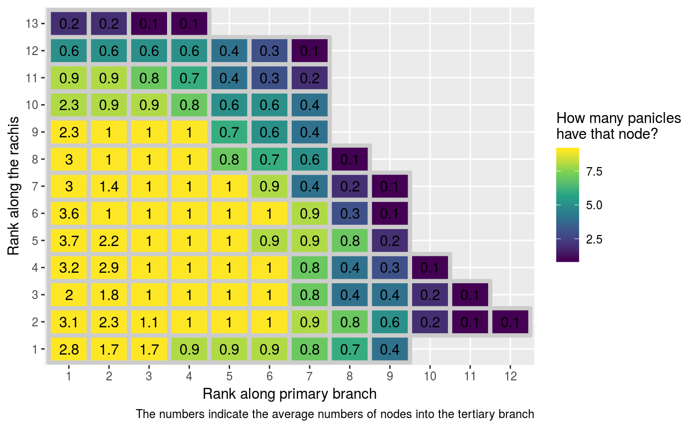

vignettes/06-summary-plot.Rmd
06-summary-plot.RmdAnd load files for many panicles as in vignette 4.
path_to_folder <- system.file(package = "ptrapr") %>%
paste0("/extdata") (note, when you do this on your files, you have to assign to the variable path_to_folder the path to your folder)
# path_to_folder <- "path/to/your/folder"Read all many panicles in a named list.
# First record the names of all the files,
panicle_paths <-
list.files(path_to_folder) %>%
# remove the extension,
# (each panicle has two files with different extension)
str_remove(".ricegr|.ricepr") %>%
# store the name of the files without the extension
unique()
# make a named object
panicle_paths <-
panicle_paths %>%
{set_names(x = paste(path_to_folder, ., sep = "/"), nm = .)}
# read all panicles in a named list
panicle_list <-
panicle_paths %>%
map(~read_full_panicle(.)) %>%
map(~invert_edges(., check_before = TRUE))Now we have all panicle objects in a named list
panicle_list %>% map(class)## $`1_1_6307`
## [1] "tbl_graph" "igraph"
##
## $`1_2_6308`
## [1] "tbl_graph" "igraph"
##
## $`1_3_6309`
## [1] "tbl_graph" "igraph"
##
## $`2_1_6310`
## [1] "igraph"
##
## $`2_2_6311`
## [1] "tbl_graph" "igraph"
##
## $`2_3_6312`
## [1] "igraph"
##
## $`3_1_6313`
## [1] "tbl_graph" "igraph"
##
## $`3_2_6314`
## [1] "tbl_graph" "igraph"
##
## $`3_3_6315`
## [1] "igraph"First you can use the panicle_tibble() function to turn every panicle graph into a tibble (data frame) that store the features of each node in the panicle.
panicles_tbs <-
panicle_list %>%
map(panicle_tibble)Then you can bind the rows of all the tibbles into one, and summarize the general characteristics of every panicle, grouping every node by its rank along the primary and secondary branch.
summarized_panicles <-
panicles_tbs %>%
# bind rows to put all panicles into one tibble
reduce(bind_rows) %>%
# 1 node downstream for spikelets
# make more sense when you take average
mutate(nodes_downstream = case_when(nodes_downstream == 0 ~ 1,
TRUE ~ nodes_downstream)) %>%
group_by(primary_rank, secondary_rank) %>%
# how many nodes have that rank?
# one per panicle
summarise(n = n(),
# if that node makes a tertiary branch,
# how many nodes does the tertiary branch has?
nodes_downstream = sum(nodes_downstream)/length(panicle_list))This is how the summarized dataset looks like.
summarized_panicles## # A tibble: 109 x 4
## # Groups: primary_rank [13]
## primary_rank secondary_rank n nodes_downstream
## <int> <int> <int> <dbl>
## 1 1 1 9 2.78
## 2 1 2 9 1.67
## 3 1 3 9 1.67
## 4 1 4 8 0.889
## 5 1 5 8 0.889
## 6 1 6 8 0.889
## 7 1 7 7 0.778
## 8 1 8 6 0.667
## 9 1 9 4 0.444
## 10 2 1 9 3.11
## # … with 99 more rowsSimilar to the panicle tileplot
summarized_panicles %>%
ggplot(aes(x = secondary_rank %>% as.character() %>% as_factor(),
y = primary_rank %>% as.character() %>% as_factor(),
fill = n)) +
geom_tile(colour = "grey80",
size = 1.5) +
geom_text(aes(label = nodes_downstream %>% round(1))) +
scale_fill_viridis_c() +
labs(x = "Rank along primary branch",
y = "Rank along the rachis",
fill = "How many panicles\nhave that node?",
caption = "The numbers indicate the average numbers of nodes into the tertiary branch")
Notes: